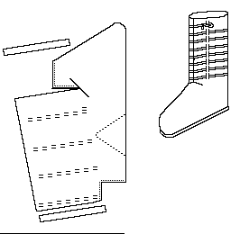

Lace-up Boot (Late 12th Century)
A fairly basic boot, reaching about to mid calf, with a single lace that wraps around the leg no less than six or seven times. It has a turned sole, a slightly pointed toe, and is unlikely to have been made with a rand. It is based on an example from
Shoes and Pattens (figs. ).
There are other interpretations of laced boots found in Schanck.

Return to
[Index]
Footwear of the Middle Ages - Historical Shoe Designs/Number 64, by I. Marc Carlson. Copyright 1996
This page is given for the free exchange of information, provided the Author's Name is included in all future revisions, and no money change hands, other than as expressed in the Copyright Page.